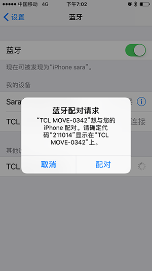
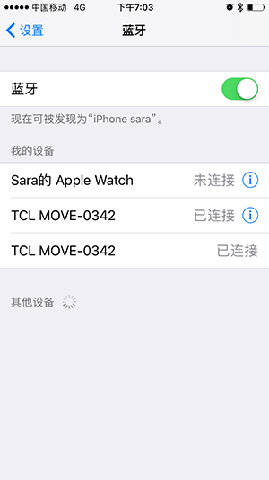

故障排除
手表不能打电话，也不能接电话该怎么办？
- 检查手机手表配对是否正常。
- 查看手表和手机是否处在连接范围内。
- 按
打开手表的蓝牙通话，然后进入手机 设置 > 蓝牙， 点击配对 。
安卓系统：配对成功出现图标
。
IOS 系统：配对成功后会出现两个一样的蓝牙连接在您的蓝牙连接列表。

无法搜索到我的手表
- 检查蓝牙连接是否正常。
- 启用蓝牙服务搜索设备。
- 重启手表和手机。
- 手表解除与其他手机的绑定，或者直接重置手表，然后进入app重新配对。
怎么才能测到更准确的心率数据
为了测得更准确的心率数据，测量时，请将手表紧贴手腕并保存静止。因测量数据受诸多因素的影响，可能出现偏差。请遵循以下条件以提高测量精度：
- 皮肤紧贴手表背部感应片（中央凸起部分）
- 手表紧贴手腕，但不必过分挤压。
- 运动时收紧表带，运动完后适当放松
- 手表应佩戴在手腕处，否则传感器无法工作。
如果手表佩戴时略宽松，或无法测得心率数据，请收紧表带。

如果手表没有响应，该怎么办？
长按电源键8秒重启（紧急处理）。
为什么手表会意外振动？
- 可能收到了一个通知。
- 手表和手机远离，超出蓝牙连接范围时，会有振动提醒。
手表不震动
- 给手表充电，确保手表电量充足。
- 检查手机与手表的连接是否中断。
手表无法充电
- 保持手表和充电底座充电口干净，无异物、汗渍。
- 检查手表背部充电口金属片是否与充电底座金属片正对紧贴。
- 检查USB口是否正常接入电源。
- 当电池全空时，需要一点时间激活电池，然后充电。
手机端安装TCL智能手表APP，且跟手表连接，手机电池的续航时间比以前短了
这种情况属于正常，本品的使用过程中，以下情况都需要消耗电池电量：
- 维持手机与手表的连接；
- 两者间的数据传输；
- 断连、搜索和重连等。
手机同时能与多少台BT 4.0 BLE设备连接？
只能一台。
手表频繁的自动断连、重连
- 手表后台服务停止。重启app再试。
- 检查手表是否在手机的安全距离之内。
a) 查看app。如果手表手机连接正常，手机右上角出现标志。如连接失败,标注中央的
会变成
。
b) 如果你的手表上出现标志 ，表示手表和手机的配对没有成功。

如何恢复出厂设置
- 如果上述解答仍无法解决问题，请尝试恢复出厂设置。
- 在app中，进入
，选择 手表 > 设置 > 恢复出厂设置。
- 长按手表电源键8秒重启。
手表收不到通知
按如下步骤：
- 进入TCL智能手表 app > 手表 > 通知, 添加你想要通知提醒的应用。
- 开启TCL智能手表app自启动。
- 添加TCL智能手表app进入白名单或受保护对象。
- 关闭锁屏节能模式。
- 进入 设置 > 通知 > 通知访问 > TCL智能手表 。 重启通知提醒。
- 重启手机。
如何检测睡眠
佩戴手表入睡，并保证电量充足。
手表Wifi验证错误
长按界面并选择删除当前的Wi-Fi，然后点击Wi-Fi，输入正确的验证码连接。